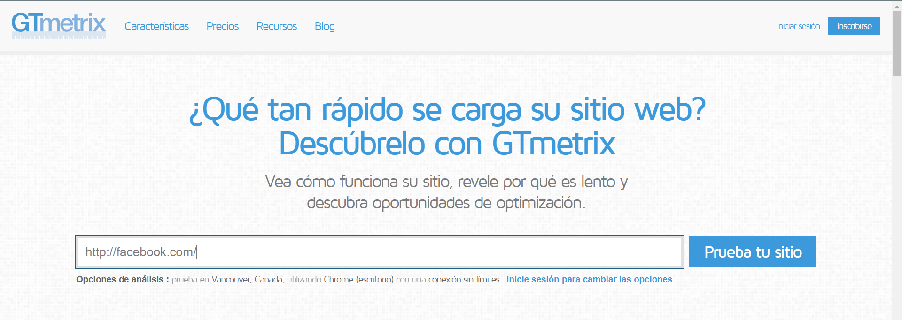
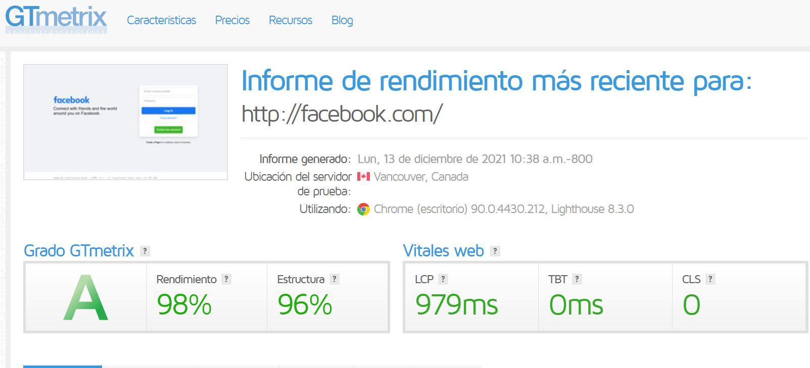
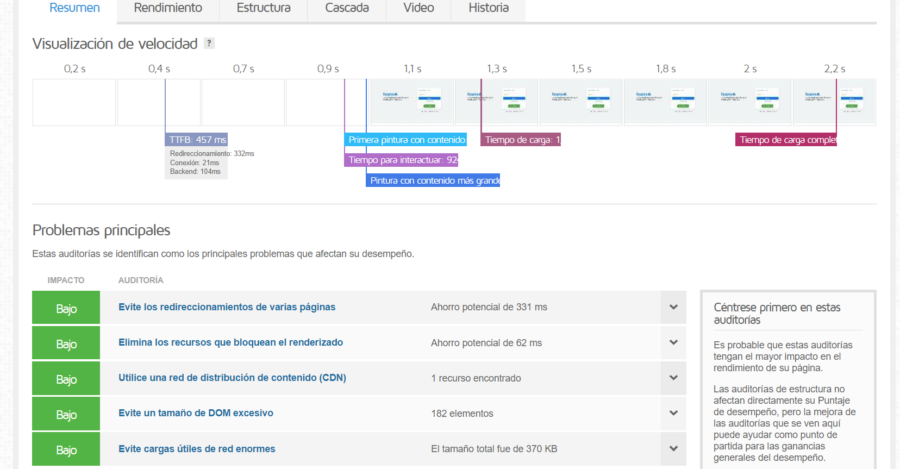
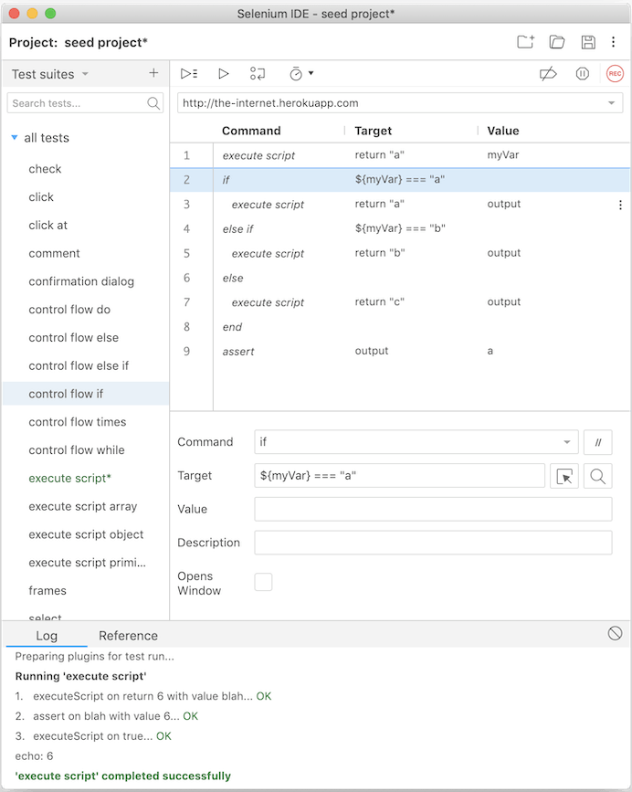

9 HERRAMIENTAS Y TEST DE VERIFICACIÓN.
Comprobar velocidad de pagina web.
Tenemos unas cuantas herramientas para comprobar la velocidad de una pagina web en concreto, yo voy a usar GTmetrix.
Es tan sencillo como poner en tu buscador gtmetrix.com y te aparecera la siguiente interfaz.
Introducimos en el campo de formulario la dirección web y a continuacion saldrá toda la informacion que suministra esta aplicacion web.
 Testeo de pagina web.
¿Por qué es importante testar una web?
Tener una web optimizada es un objetivo fundamental que todas las empresas definen en sus estrategias de posicionamiento web. No solo se trata de mantener los factores SEO dentro de la normalidad, también hay que vigilar el estado de la página web, en general .
Cuando se desarrolla una aplicación Web con distintas páginas, comprobar que todo funciona correctamente resulta una tarea necesaria, pero muy tediosa, más aún cuando hay que hacerla cada vez que se hace un cambio.
Por suerte contamos con herramientas como Selenium que es de codigo abierto por ejemplo.
- ¿Que es Selenium?
Es una herramienta de prueba de código abierto que se utiliza para probar el rendimiento de sitios web y aplicaciones web dinámicas. Una persona con muy pocos conocimientos técnicos también puede interpretar los resultados proporcionados por Selenium.
Selenium admite muchos lenguajes como Java, Ruby, C #, Python, etc.
Selenium ejecuta una herramienta de reproducción para registrar pruebas funcionales, por lo que no es necesario que aprenda el lenguaje de programación de pruebas. El selenio es muy fácil de configurar; tienes que agregar el complemento específico del navegador y le pulsamos al boton rojo para grabar .
Tras eso, no tenemos más que utilizar la web como si fuéramos un usuarios. Podemos agrupar todas las acciones en el mismo test o bien hacer pequeños test deteniendo la grabación y creando nuevos Test-Case. Conforme vayamos usando la página, veremos cómo el addon va registrando todas las acciones que luego podrá reproducir